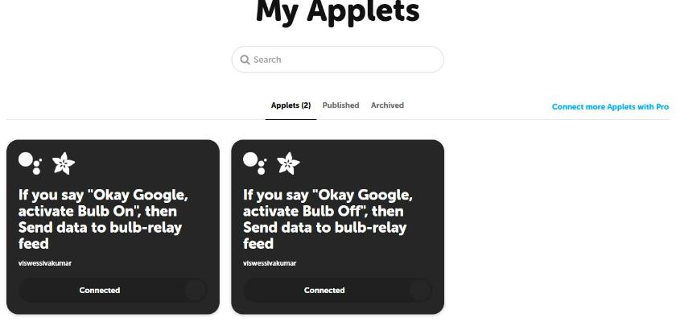
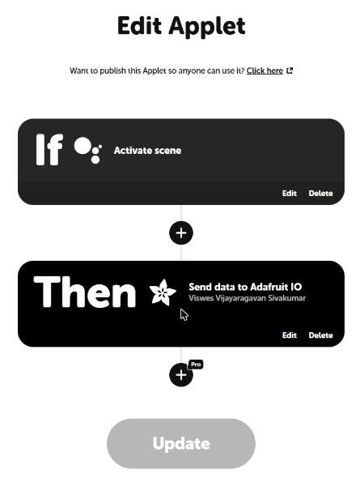
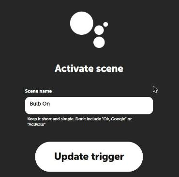
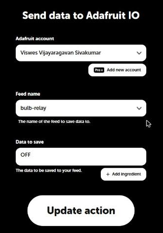

1Overview
Objective. Switch the same bulb by voice: saying "Okay Google, activate Bulb On" turns it on, and "…activate Bulb Off" turns it off.
How. Two IFTTT applets listen for those Google Assistant phrases and write ON or OFF to the bulb-relay feed from Task 2. The ESP32 is already subscribed to that feed, so the bulb reacts with no change to the firmware.
2Concepts
IoT automation
Automation means a device acts on an event without someone pressing its button: a spoken phrase, a time of day, a sensor reading, a message from another service.
What IFTTT is and why it is used
IFTTT ("If This Then That") connects online services with small rules called applets. It already has integrations for Google Assistant and Adafruit IO, so I could join them without writing or hosting any code.
Trigger → action
Every applet has one trigger (the If) and an action (the Then). Here the trigger is Google Assistant's Activate scene with the scene name "Bulb On", and the action is Adafruit IO's Send data to the feed bulb-relay.
Role of Adafruit IO
IFTTT can't reach the ESP32 directly; the ESP32 is behind a home router. Adafruit IO is the meeting point: IFTTT writes to the feed over the internet, and the broker pushes the value to the ESP32 over the MQTT connection it keeps open.
3System Design
The trigger reaches the device through three cloud services. The ESP32 only sees the last hop: an MQTT message on bulb-relay.
4Hardware & Software
| Hardware | Software / services |
|---|---|
| Same rig as Task 2 (ESP32, relay, bulb) | IFTTT account with Google Assistant and Adafruit services connected |
| A phone with Google Assistant | Adafruit IO feed bulb-relay |
| Task 2 firmware, unchanged |
5Wiring / Setup
Unchanged from Task 2: relay IN on GPIO26, VCC on VIN, GND to GND, bulb live wire through COM/NO.
6Implementation
No new firmware. The Task 2 sketch already treats "ON" (or "1") as on and anything else as off, so the strings IFTTT sends work as they are:
void handleMessage(AdafruitIO_Data *data) {
String val = data->value();
bool on = (val == "1" || val.equalsIgnoreCase("ON"));
setRelay(on);
}That is the point of this task: the automation lives in the cloud, and the device stays simple. Full sketch: bulb_v2_adafruitio_relay.ino.
7Configuration
| Applet | If (trigger) | Then (action) |
|---|---|---|
| Bulb On | Google Assistant → Activate scene, scene name Bulb On | Adafruit → Send data to Adafruit IO, feed bulb-relay, data ON |
| Bulb Off | Google Assistant → Activate scene, scene name Bulb Off | Adafruit → Send data to Adafruit IO, feed bulb-relay, data OFF |
- ifttt.com → Create → If This → Google Assistant → Activate scene → scene name
Bulb On. - Then That → Adafruit → Send data to Adafruit IO → feed
bulb-relay, data to saveON. - Repeated for
Bulb Off/OFF. Both applets show as Connected under My Applets.




8Evidence


Tested conditions
| Test | What to check |
|---|---|
| Bulb On, then Bulb Off | Bulb follows each command |
| Same command twice | Second command leaves the bulb as it is |
| Voice command, then dashboard toggle, then voice again | Both controllers work on the same feed |
| ESP32 reset while the bulb is on | Bulb comes back on after reconnecting (last value fetched on boot) |
9Challenges & Fixes
Problem. The voice command was not recognised as a scene.
Why. Google Assistant scene names must not include "Ok Google" or "Activate"; the phrase is "Okay Google, activate <scene name>".
Fix. Named the scenes just Bulb On and Bulb Off.
Problem. One applet could not both switch the bulb on and off.
Why. On the free IFTTT plan an applet has one trigger and one action, and the account is limited to two applets.
Fix. Used exactly two applets, one per state, each sending a fixed value (ON or OFF) to the same feed.
Problem. IFTTT sends text, while the dashboard toggle could send numbers.
Why. Different publishers can write different formats to the same feed.
Fix. The firmware accepts both "1" and "ON" (case-insensitive), so every publisher works.
10Reflection
The device didn't need to change to gain a new behaviour. Because the ESP32 only listens to a feed, anything that can write to that feed becomes a controller: a dashboard, a voice assistant, a schedule. The trade-off is that a voice command now depends on Google, IFTTT and Adafruit IO all being up, and the chain adds a noticeable delay compared with the local web server in Task 1.
11Repository Link
Configuration notes and screenshots: https://github.com/TringyTrongy/protosem-iot/tree/main/task3-ifttt-automation · firmware (shared with Task 2): https://github.com/TringyTrongy/protosem-iot/tree/main/task2-adafruit-io-mqtt
✓Checklist coverage
Every item from the IoT Portfolio Guide for this task, and where it is on this page.
| Guide item | Where |
|---|---|
| Objective of the IoT automation | 1. Overview |
| Basic concept of IoT automation | 2. Concepts |
| What IFTTT is and why it is used | 2. Concepts |
| Trigger → action concept | 2. Concepts |
| Role of Adafruit IO in the automation | 2. Concepts |
| Hardware and software used | 4. Hardware & Software |
| IFTTT applet / workflow created and documented | 7. Configuration |
| Trigger used identified | 7. Configuration |
| Action performed identified | 7. Configuration |
| How the trigger reaches the IoT system | 3. System Design |
| Communication / data-flow diagram | 3. System Design |
| ESP32 source code | 6. Implementation |
| Screenshots of the IFTTT configuration | 7. Configuration |
| Screenshots of the Adafruit IO dashboard / feed | 8. Evidence |
| Photographs of the working prototype | 8. Evidence |
| Video of the complete automation | 8. Evidence |
| Automation tested under different conditions | 8. Evidence |
| Problems and solutions | 9. Challenges & Fixes |
| What I learned about cloud-based automation | 10. Reflection |
| Reflection | 10. Reflection |